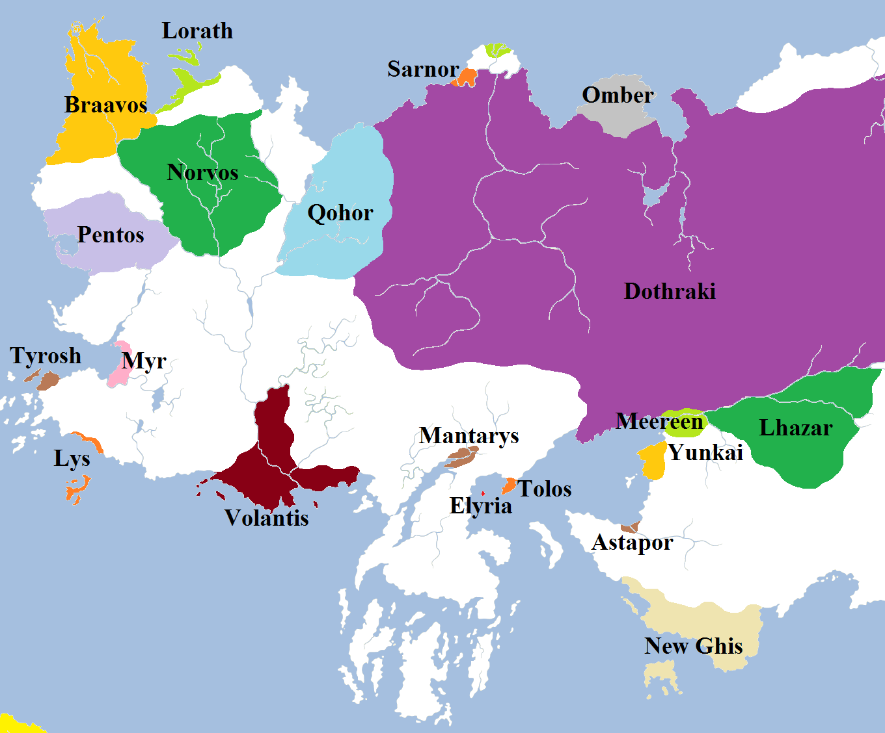
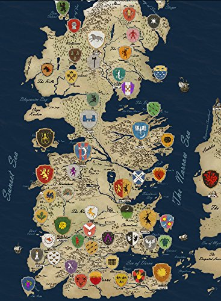

Descriptions of the maps are from the official Wiki.
The Known World
The known world is composed of at least three continents (Westeros, Essos, and Sothoryos), a large landmass (Ulthos), and a number of many smaller islands. None of the four major landmasses have been completely mapped. The known world is part of a round planet, which might be a little larger than Earth. There might still be smallfolk who believe the world to be flat.

Essos
Separated from Westeros by the narrow sea, Essos extends eastwards for many thousands of miles. It is larger than Westeros, but much of it consists of less densely populated steppes, plains and deserts. The western edge of the continent is controlled by the nine Free Cities, while the city-states of Slaver's Bay are located in the south-central region. Much of the continental interior, known as the Dothraki sea, is grassland ruled by the tribal warriors known as the Dothraki. Further east is Qarth and the fabled Jade Sea. The mapped lands of Essos are divided by the Bone Mountains, which run from the Shivering Sea in the north to the Jade Gates in the south. East of the Bone Mountains are the Plains of the Jogos Nhai, Yi Ti, the Grey Waste, Mossovy, and the legendary Asshai in the foreboding Shadow Lands.

Westeros
Located in the far west of the known world, the continent of Westeros is long and relatively narrow, extending from Dorne in the south to the Lands of Always Winter in the far north. The Wall, the border between the Seven Kingdoms and lands beyond the Wall to the north, is three hundred miles long, indicating that Westeros is roughly nine hundred miles at its widest point, east to west. North of the Wall, a large amount of land remains uncharted.
Westeros contains the Seven Kingdoms south of the Wall, and the Lands of Always Winter in the lands north of the Wall. The Seven Kingdoms, first unified under Targaryen rule, are made up out of nine regions (the crownlands, Dorne, the Iron Islands, the north, the Reach, the riverlands, the stormlands, the Vale of Arryn, and the westerlands). Bordering on Westeros lie the Sunset Sea (to the south), the narrow sea (to the east, southern half), and the Shivering Sea (to the east, northern half).